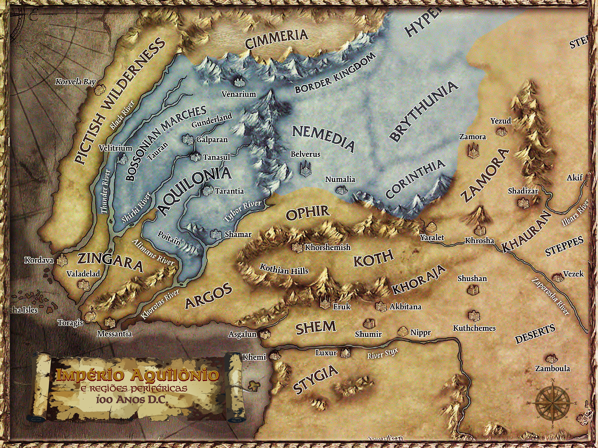

Aquilônia
Centro imperial, fonte da Coroa, das legiões, das estradas e da legitimidade pública. Seu drama é confundir estabilidade com direito natural de comando.
Conan Legacy - Centro Político da Campanha
O Império Aquilônio é a tentativa de transformar conquista, linhagem, lei e guerra em uma ordem comum. Ele sobrevive porque ainda possui estradas, legiões, senadores, templos e riqueza; ele ameaça ruir porque Conn morreu sem sucessor aceito por todos.
O mapa mostra o núcleo aquiloniano e suas regiões periféricas em 100 anos D.C. Aquilônia ocupa o centro simbólico e político, mas o Império se estende por uma rede de alianças, submissões, pressões militares e disputas culturais que alcançam Nemédia, Corinthia, Brythunia, Hyperborea e fronteiras instáveis.

Mapa público de referência para navegação de campanha. As fronteiras representam influência imperial, não controle absoluto.
Aquilônia ainda é o coração do Ocidente hiboriano. Tarantia conserva o peso do trono, dos arquivos e do Senado. As legiões ainda obedecem a ordens formais. Os templos de Mitra ainda dão linguagem moral ao poder. Mas a morte de Conn abriu uma pergunta que ninguém consegue responder sem ameaçar todos os demais: quem fala pelo Império quando a Coroa está vazia?
Esse é o ponto de partida da campanha. O Império não caiu. Ele continua forte o bastante para cobrar, convocar, julgar e punir. Justamente por isso, sua crise é perigosa: cada facção tenta salvar a ordem de um modo que pode quebrá-la.
Centro imperial, fonte da Coroa, das legiões, das estradas e da legitimidade pública. Seu drama é confundir estabilidade com direito natural de comando.
Segundo pilar do Império e rival tradicional de Aquilônia. Sua nobreza aceita o pacto imperial, mas resiste a ser tratada como província vencida.
Centro científico, cultural e intelectual. Onde Aquilônia vê lei e Nemédia vê pacto, Corinthia vê método, saber e oportunidade.
Região de integração complexa, dependente das rotas e da proteção imperial, mas inquieta diante de decisões tomadas longe.
O sul hyperbóreo integra o Império de modo recente e precário. Sua obediência é mais cálculo do que devoção.
A morte de Conn deixou instituições vivas, mas nenhum centro incontestável. Cada voto pode parecer administrativo e ser, na prática, uma batalha sucessória.
As duas castas nobres sustentam o Império e disputam sua alma. A tensão entre elas define a política do Senado.
Nas bordas, poder real pertence a quem mantém muralhas, patrulhas e abastecimento. A autoridade local pode salvar o Império ou substituí-lo.
A cidade sobre rodas cresce onde a autoridade formal é lenta. Mercado, rota, fortaleza e rumor: Karavazyan é sintoma de um Império que precisa se mover para continuar vivo.
Depois de entender o quadro geral, consulte os Locais do Império: Aquilônia, Tarantia, Tanasul, Galparan, Shamar, Poitain, Gunderland, Bossonian Marches, Venarium, Velitrium e Karavazyan.